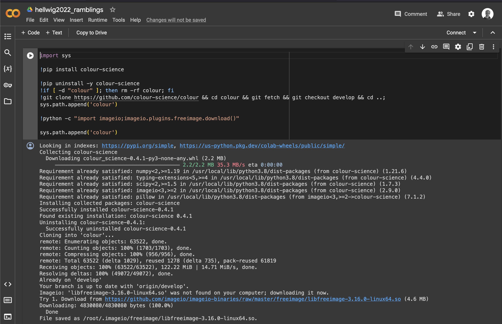

+ ASWF
Presented to Academy Software Foundation (ASWF) Technical Advisory Council (TAC) 3/20/24
Pillow + ASWF
About Me

Me circa 1998 3 years after first PIL release
- Jeffrey A. Clark
- Alex
- Bachelor of Science Computer Science 1998 Loyola University Maryland
About Me
Me circa 1998 3 years after first PIL release
- Python Pillow Creator 2010
-
PIL fork author (↑same thing)
- Tidelift Lifter 2019
About Me
Me circa 1998 3 years after first PIL release
-
Lifter 2019(actually late 2018)
-
Lifter Advocate 2023, 2024

❤️
What is this?
Various thinly veiled attempts
- Learn about VFX + open source
- Lifter Advocacy
-
Job in the industry, please? üòá
Pillow + ASWF
Pillow + ASWF
Pillow + ASWF
Please explain how this project is aligned with the mission of the Academy Software Foundation? (Take 2)
- Establish relationship
- Pillow + VFX
Pillow + ASWF (Take 2)
Please explain how this project is aligned with the mission of the Academy Software Foundation?
- Outline benefits
- Pillow + ASWF
Pillow + ASWF
Please explain how this project is aligned with the mission of the Academy Software Foundation? (Take 2)
- Ask for help
- Infrastructure, community
How did we get here?
Timeline, starting late 2023
Timeline

Timeline

Timeline
Timeline
Timeline

Timeline
Timeline
We are already aligned!
Specific alignments
org:AcademySoftwareFoundation pillow
10 files

org:AcademySoftwareFoundation pillow
8 results

org:AcademySoftwareFoundation pillow
9 results

org:Netflix pillow
org:amazonlinux pillow
Dependents
1.5M repositories/15K packages
???

Mind blown
(https://giphy.com/gifs/producthunt-mind-blown-blow-your-26ufdipQqU2lhNA4g)
Lies, Damn Lies, Statistics
Anything to do with ASWF?
ü§∑
"I don't know"
—Jeff Spicoli
—Dusty Slay
"I don't even work here."
Infrastructure
Timeline
Timeline
Timeline
Timeline
Timeline
Specific Alignments

Anything to do with ASWF?
ü§∑
How did I make the connection?
Trask.
Radio.
Trask.
Radio.
—Tess McGill, Working Girl
Specific alignments
NukeVFX
cannot import name '_imaging' from 'PIL'
Specific alignments
Specific alignments
Specific alignments
Infrastructure
- Give and take?
- Keep up with Python releases
- Publish wheels for all ASWF projects
Finally, some real stuff